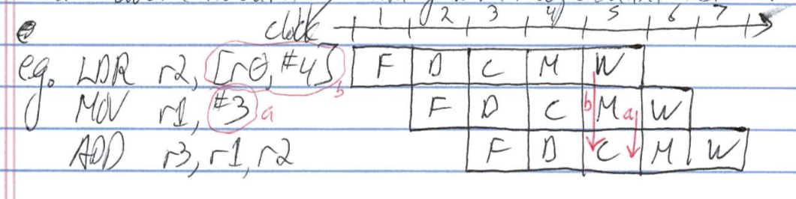

Pipelining
Datapath
-
Handout: pipelined processor datapath, second page
-
stages operate concurrently
-
instruction execution overlapped
-
output of stage 1 is buffered in B1-2 for use by stage 2 in next cycle(B2-3, B3-4, B4-5 similar)
- includes info needed for control signals
- I-cache allows instruction fetch every cycle
- D-cache allows load/sore every cycle
- 1 instruction finishes per cycle(in steady state)
Hazards
- conditions that stall the pipeline
e.g. miss in I-cache (2 extra cycles)
- types: data, control, structural, 2 cycles stall
Data Hazards
e.g.
ADD r2, r0, r1
ADD r3, r2, #1
- value [r0] + [r1] in pipeline after compute in clock cycle 3
- forward it
e.g.
ADD r2, r0, r1
ADD r3, r2, #1
Data Forwarding
Asel = { PC + 4, A, Z }
Bsel = { B, offset, Z }
- Also need forwarding paths from stage 5 and to stage 2
e.g.
Load Hazard
- a dependent instruction following a load must delay 1 cycle
e.g.
- load delay slot is instruction following load
- can avoid hazard by filling with independent instruction
e.g.

Control Hazards
- hazard on PC(caused by branches)
e.g.
- ~20% dynamic instruction mix are branches
- reduce penalty to 1 cycle with dedicated branch adder in decode stage
Branch Delay Slot
- "feature" instruction after branch always executed (i.e dont squash it)
e.g.
Speculative Execution
- predict branch direction(taken, not taken) and start fetching
- resolve branch(execute it)
- if prediction correct, then
- else
- squash speculative instructions
- branch history table
- BNT updated on branch resolution with BTA and branch behaviour(BT = branch taken, BNT not taken)
1 bit predictor
- states:
- 0 = Likely not taken(LNT)
- 1 = Likely taken(LT)
- problem: always mispredicts first and last loop iterations
2 bit
- states:
- 00 = Strongly not taken(SNT)
- 01 = Likely not taken(LNT)
- 10 = Likely taken(LT)
- 11 = Strongly taken(ST)
e.g.
on BNT miss, guess LNT
i = 0;
do {
...
i++;
} while (i < 3); // B1
Structural Hazards
e.g. cache too small => less hit rate
e.g. unified L1 => cannot fetch and ld/st in same cycle
Performance
- execution time : T = n x CPI / r where
- n = dynamic instruction count
- CPI average cycles instruction
- r = clock rate(frequency)
- ideal CPI = 1
- increased by hazards
e.g.
CPI = 1.0 + B + L
= 1.0 + 0.15 x 0.2 x 2 + 0.2 x 0.4 x 1
= 1.14
- throughput
- P = 1 / T
- speedup of processor r2 over processor 1
- S = P 2 / P 1 = T 1 / T 2 = (n 1 x CPI 1 / r) / (n 2 x CPI 2 / r 2)
if n 1 = n 2 and r 1 = r 2 , S = CPI 1 / CPI 2
See previous chapter
See next chapter